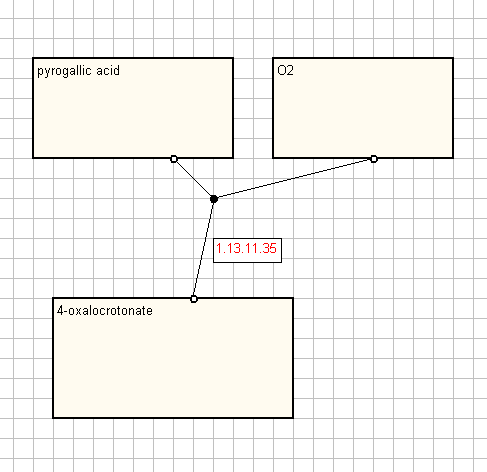
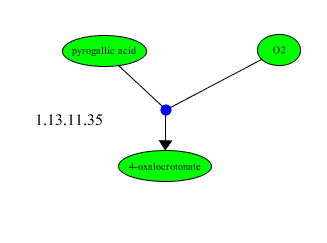

I agree with Sven that the scaling should be done by the program doing the rendering. This makes the SBML more universally applicable, but will probably give the programmers some problems handling fonts for the labels.
Relative coordinates for positions and sizes of boxes allow for variations between programs. I'm not sure that we should be forcing font faces, font sizes, colours, or shapes for types of molecules on users. If the boxes are in the same relative positions the following diagrams are equivalent.
 
Here we again face the problem that the more tightly we specify how things should look, the more likely that existing pathway editors will not be able to cope without massive revisions and will ignore (or be forced to ignore by being unable to comply with) the standard we recommend.
Hugh Spence
GSK Scientific Computing and Mathematical Modelling
Medicines Research Centre
Gunnels Wood Road
Stevenage
UK
SG1 2NY
On Wednesday 21 May 2003 02:20, Herbert Sauro wrote:
> Thanks, one question, I'm curious to know what units your coordinates are
> in?
We think that the layout should only specify relative places of the different
objects in the diagram. So we do not really have a unit for the coordinates.
Any program can easily find a bounding box while parsing the file and scale
the diagram to its needs.
A unit information would specify how big the diagram actually should be on
screen or on paper. We consider that to be render level information.
But maybe we missed something. Can someone provide a reason why unit
information is important for the layout of a reaction scheme?